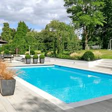

I’ve always had a fascination with making things, especially online. And when I discovered Python, I was amazed by what coding could do, and with 1 line of code, I started my journey with “Hello world”. I learned about the core logic statements like “and”, “or”, and my favorite, if-else statements. Learning about these changed my perspective on everything online. I started to understand how things worked, and the logic of what was happening. For example, with this very essay right now, coding helped me understand that I press a button, the computer registers it, sends it to Docs, and it changes a bunch of pixels to black. I started to see the basic logic in a lot of online apps and websites. It also taught me how to be patient. Whenever I make something, there are usually tons of errors and problems. But I learned how to debug and solve problems, and how to use outside resources to help me with my problem. It made me feel proud when I made a program and it had no bugs. But most importantly, it taught me that every step towards a goal will have a lot of setbacks.

I’ve never been good at arguing. But joining the speech and debate club made me realize that I could do it. The minute I joined the club I realized my love for Public Forum, a 2 versus 2 debate format, and I started on my journey. But then I had an actual tournament, and it made me realize that I was terrible. My partner and I lost all 6 rounds, and I had never felt worse. However, after that tournament, I signed up for another one. And another. That tournament made me realize that I needed to get serious about debate. And I did. At a practice tournament, we went 2 for 1. Pretty good, but it was only practice. Finally, the next real tournament happened. And it wasn’t that bad! Me and my partner prepped like crazy the week before, and we went 2 for 4, which for our second-ever tournament, was not terrible. Now what I learned from debate. It made me realize that working with partners can be hard, but sometimes that partnership is the reason why we do good. It also taught me how to organize my thoughts and research, and how to see the pros and cons of a topic.
I love gaming. It all started many years ago when I had a summer camp for learning Minecraft. I had never played before, so my friend and I signed up for it. And it was so fun. I decided to start playing it with my friends in my free time, and here I am now. I started with Minecraft, and soon I branched out into different games like Celeste. I started playing Celeste one summer when I noticed that it was 90% off on Steam. I downloaded the game and started playing. It taught me how to persevere through hard levels, and how to never give up even if the section that I was playing was hard. Whenever I have free time on the weekend I always play games with my friends, and I always have fun and work hard.
I recently started swimming after school to build endurance, and I have started to like it. Most days after school I go to the local pool for swim practice and swim for 45 minutes. My favorite stroke is breaststroke, but I practice different strokes and also sometimes diving and it is super fun to learn and improve. It is also my time to think about other things like coding and school, and sometimes I come up with new ideas. Over the months I have gotten better at swimming, and I have also become stronger and more endurance. I love swimming because it is sometimes about competing with yourself and improving through practice. My goal for the near future is to move up a level in my group and to build even more endurance.

I love skiing. It’s the one outdoor activity that I feel like I’m actually good at. I started skiing at a very young age, and I did lessons for a while. That taught me the basics of skiing: stopping and basic turns. But then, we started learning parallel skiing. And I hated it. I had to throw away everything I knew to learn a new method of skiing, and I sucked at it. But over time I got much better and can now comfortably ski blues and sometimes through trees. Skiing taught me to never give up. Once I fell so many times on one specific steep slope, but I did it again. And again. And I got the hang of it! Nowadays I love skiing and I go 3-4 times every season.